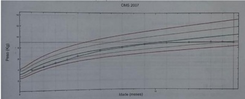

No que se refere à doença celíaca na pediatria, assinale a alternativa correta.
Escolar apresenta quadro caracterizado pela presença de diarreia crônica, acompanhada de distensão abdominal, perda de peso, diminuição do tecido celular subcutâneo, atro a da musculatura glútea, falta de apetite, alteração de humor (irritabilidade ou apatia), vômitos e anemia. Considerando a hipótese diagnóstica do paciente acima, assinale a alternativa que contém apenas alimentos seguros para esta criança.
Lactente de 1 ano de idade, apresenta diarreia há 6 meses, caracterizada por fezes líquidas, moderada quantidade, 4 vezes por dia, odor fétido, distensão abdominal, sem sangue ou muco. Mãe refere que simultaneamente apresenta di culdade de ganho de peso e de estatura. Os exames laboratoriais revelaram: Hemoglobina = 9,0 g/dl; Albumina = 2,5 g/dL (valor de referência 2,9 a 4,8 g/dL); Anti-tranglutaminase IgA = positivo; Dosagem de imunoglobulinas: IgA = normal para a idade. Para esta criança, além do trigo, qual outro componente você excluiria da dieta?
Menina, 2a e 6 meses, apresentando desde os 8 meses de idade, dor e distensão abdominal acompanhadas às vezes de fezes líquidas. Refere inapetência e perda de peso. APÓS INVESTIGAÇÃO E CONFIRMAÇÃO DIAGNÓSTICA, DEVEM SER EXCLUÍDOS DA DIETA:
Paciente de nove anos de idade, sexo feminino, portadora de ao serviço de gastroenterologia devido à presença de úlceras aftosas orais recorrentes, atulência e distensão abdominal. Sem outras queixas. Nega perda de peso, edema ou diarreia. Na história pregressa, teve DM com diagnóstico aos seis anos de idade. Em controle adequado com endocrinologia. Vacinação em dia. Teste do pezinho: normal. Exames apresentados na consulta: IgA total: 85 mg/dL (valor de referência: > 7 mg/dL); antitransglutaminase IgA: 80 U (valor de referência: < 20 U). No exame físico, estava corada, hidratada, com boa perfusão capilar, pulsos cheios e rítmicos, sem edemas. Aparelho digestivo: abdome distendido, indolor, sem massas ou visceromegalias, ruído hidroaéreo presente. Oroscopia: úlceras aftosas em língua e gengiva. Restante do exame sem alterações significativas. Com relação a esse quadro clínico, assinale a alternativa correta.
Paciente de 3 anos é atendido no ambulatório com quadro de diarreia crônica, acompanhada de distensão abdominal, perda de peso, inapetência, alteração de humor com irritabilidade, vômitos esporádicos. O paciente também apresentava- se emagrecido, com diminuição do tecido celular subcutâneo e atro a da musculatura glútea. Mãe trouxe um hemograma que apresentava anemia. Dentre as opções abaixo, a conduta mais adequada para a confirmação diagnóstica dessa criança e o tratamento indicado é:
Lactente de 18 meses de idade apresenta diarreia há cerca de 40 dias. Pais relatam fezes semilíquidas a semipastosas, 4 a 5x/dia, inapetência e irritabilidade. Recebeu leite materno até os 10 meses de idade, com introdução de fórmula infantil aos 5 meses, alimentação complementar aos 6 meses, alimentos com glúten aos 7 meses e leite de vaca com 1 ano de idade. Ao exame, irritado, aspecto emagrecido, panículo adiposo escasso, grande distensão abdominal. Qual é a hipótese diagnóstica e como confirmá-la?
A doença celíaca é uma doença sistêmica imunomediada, induzida pela ingesta do trigo, centeio e cevada, em indivíduos geneticamente predispostos. Deve-se ter atenção especial às doenças associadas a essa afecção ou grupos de risco, que são:
Paciente masculino, 4 anos, portador da síndrome de Down, apresenta distensão abdominal observada há 2 anos. Na investigação, a antitransglutaminase IgA foi fortemente reagente. Qual é a conduta imediata mais correta?
A enteropatia sensível ao glúten, também conhecida como doença celíaca, é uma desordem sistêmica autoimune crônica, desencadeada pela ingestão de glúten em pessoas com predisposição genética. Os sintomas incluem problemas gastrointestinais como diarreia crônica, distensão abdominal, má-absorção intestinal e perda de apetite. Em crianças, pode ocorrer atraso no crescimento que geralmente se inicia entre os seis meses e dois anos de idade. Diante da exposição ao glúten, pacientes sensíveis desenvolvem uma reação imunológica anormal, com produção de anticorpos que podem afetar vários órgãos. No intestino delgado, estes anticorpos causam um processo inflamatório que leva à diminuição do processo de absorção de nutrientes. Com base nestas informações, identi que nas alternativas abaixo qual especialização celular presente no intestino delgado é responsável pela absorção.
Em relação à incidência aumentada de doença celíaca em pacientes com síndrome de Down, podemos dize que:
MLB, sexo feminino, com dois anos de vida, apresenta quadro de distensão abdominal, emagrecimento importante, palidez intensa de mucosas e discreto edema de pés e pesquisa de gordura na fezes positiva. O diagnóstico mais provável pode ser confirmado com:
Qual dos seguintes, ao que tudo indica, apresenta menor toxicidade na doença celíaca?
Menino, três anos, apresenta baixa estatura (Z escore abaixo de -3), distensão e dor abdominal. Os exames mostram anemia, anticorpo anti-transglutaminase IgA acima dos valores normais e não há visceromegalias. A confirmação desta hipótese diagnóstica é por meio de:
A doença celíaca é uma doença sistêmica imunomediada induzida pela ingestão do glúten em indivíduos geneticamente predispostos. Com base em seus conhecimentos, escolha a alternativa com a informação correta.
Menina de 15 meses de vida recebe aleitamento materno e dieta geral adequada para a idade. Há 6 meses apresenta diarreia sem sangue e sem muco, acompanhada por dé cit de ganho de peso. Ao exame físico: descorada, apática, com distensão abdominal, com hipotrofia da musculatura glútea, ânus sem anormalidades. Qual o diagnóstico mais provável?
Menina, 13m, internada para investigar desnutrição grave. Mãe conta que a criança ganhou bem peso até os oito meses chegando a pesar 9Kg mas, com a introdução de alimentos, iniciou quadro de aumento do número de evacuações (fezes claras de odor fétido) e distensão abdominal. Exame físico: Regular estado geral, peso= 7,2 Kg, descorada 2+/4+; Abdome: importante distensão; Pele: equimoses; hipotrofia global da musculatura incluindo musculatura glútea; Membros: edema pré-tibial 2+/4+. O EXAME A SER SOLICITADO É:
Qual dos seguintes, ao que tudo indica, apresenta menor toxicidade na doença celíaca?
Lactente de 18 meses é trazida ao pediatra pois a mãe acha que a criança parou de crescer. Na anamnese dirigida, refere que a criança apresenta episódios de distensão abdominal e diarreia frequentes e intermitentes, sem a presença de sangue. Segundo a mãe, o quadro de diarreia se iniciou por volta dos nove meses após a introdução completa da dieta complementar. Ao exame, nota-se a criança hipocorada, com abdome distendido, porém sem sinal de irritação peritoneal, com restante do exame físico sem alterações. À avaliação nutricional, apresenta-se abaixo do escore z -3 em estatura para idade e entre os escores z -2 e -3 peso para estatura e IMC para idade. Tem hemograma recente que mostra anemia ferropriva. A principal hipótese diagnóstica e a classificação nutricional para esse caso, respectivamente, são:
Um lactente de 15 meses apresenta pouco ganho de peso e história de diarréia intermitente. Na suspeita de doença celíaca, quais são os exames de investigação e conduta?
Menino, 18 meses, apresenta diarreia há 60 dias, que iniciou com fezes líquidas e explosivas. Mãe refere que ele apresenta irritabilidade, tem dormido pouco e chora muito. A barriga está muito protuberante e a criança apresenta a seguinte curva de peso (em azul). (VER IMAGEM) Qual é o diagnóstico mais provável?

Lactente de 18 meses é trazida ao pediatra pois a mãe acha que a criança parou de crescer. Na anamnese dirigida, refere que a criança apresenta episódios de distensão abdominal e diarreia frequentes e intermitentes, sem a presença de sangue. Segundo a mãe, o quadro de diarreia se iniciou por volta dos nove meses após a introdução completa da dieta complementar. Ao exame, nota-se a criança hipocorada, com abdome distendido, porém sem sinal de irritação peritoneal, com restante do exame físico sem alterações. À avaliação nutricional, apresenta-se abaixo do escore-Z -3 em estatura para a idade e entre os escores-Z -2 e -3 peso para a estatura e IMC para a idade. Tem hemograma recente que mostra anemia ferropriva. A principal hipótese diagnóstica e a classificação nutricional para esse caso, respectivamente, são:
Adolescente feminina, 13 anos, é atendida em ambulatório de Unidade Básica de Saúde, com queixa de dé cit ponderoestatural há 8 meses acompanhada de diarreia crônica, sem sangue, sem muco, volumosa, muito fétida. Nega náuseas, vômitos, febre. Apresenta ainda distensão abdominal, com piora no m do dia e artralgias. Nega outros sintomas. Ao exame físico, o IMC e E/I entre -3 e -2 Z score. Tanner M1P1. Sistema respiratório e cardiovascular, sem alterações. Abdome com distensão gasosa, sem massas, sem megalias, indolor, ácido e RHA presentes. Fez tratamento com albendazol, dose única e metronidazol, 30 mg/kg/dia, por 7 dias, sem melhora do quadro. O caso relatado é mais compatível com o diagnóstico de:
A doença celíaca tem como lesão clássica na endoscopia a(s)
Qual dos seguintes, ao que tudo indica, apresenta menor toxicidade na doença celíaca?
Escolar de seis anos, cujo alvo genético para estatura é percentil 50 está abaixo do percentil 3 é atendido por você em uma consulta de retorno no posto de saúde. Ao exame, a criança apresenta distensão abdominal e irritabilidade intensa. A mãe apresenta a você um exame aonde foram dosados T3, T4 e TSH, sendo todos normais. A investigação que provavelmente revelará a doença de base da criança será:
Lactente, 15 meses, apresenta pouco ganho de peso e história de diarreia intermitente. Na suspeita de doença celíaca, quais são os exames da investigação e a conduta?
Uma criança de três anos é levada ao consultório com história de vários meses de diarreia, o quadro iniciou com aproximadamente um ano de vida. Há retardo no crescimento e atro a muscular generalizada, além de importante distensão abdominal. A criança é anoréxica e irritada, com importantes sintomas de má-absorção de carboidratos. Uma hipótese diagnóstica importante é:
O diagnóstico de doença celíaca até 15 anos atrás baseava-se unicamente em resultados de biópsia. Atualmente, a triagem para diagnóstico pode ser feita com os seguintes, exceto:
Um portador de doença celíaca pode ingerir a seguinte substância:
Criança de 8 meses de idade é atendida no Ambulatório de Pediatria com a mãe referindo que a paciente passou apresentar vômitos frequentes há 2 meses acompanhado de: irritabilidade, fezes mais volumosas com diarréia intermitente, di culdade em ganhar peso e aumento do volume abdominal, sem outras queixas. Qual é o diagnóstico mais provável (critério clínico- epidemiológico)?
Criança, 2 anos de idade, apresenta quadro diarreico há 1 ano com episódios esporádicos de vômitos, hiporexia, irritabilidade, dé cit de crescimento, distensão abdominal, diminuição do tecido celular subcutâneo e atro a da musculatura glútea. A mãe relata que as fezes são volumosas, fétidas e gordurosas. Acerca desse caso clínico, assinale a alternativa que apresenta a PRINCIPAL hipótese diagnóstica.
Em crianças com doença celíaca, o tratamento dietético está baseado em:
Lactente de quinze meses, previamente hígido, apresenta há seis meses quadro de diarreia, hiporexia, distensão abdominal e irritabilidade. Durante consulta pediátrica, foi identi cado dé cit de crescimento. Considerando-se as manifestações clínicas apresentadas pelo paciente, o diagnóstico mais provável é:
Revisar: possível letra faltando em enunciado
Lactente de 18 meses, sexo masculino, é levado ao pediatra por retardo de crescimento, irritabilidade e falta de apetite persistentes, além de constipação eventual. Exame físico: emagrecido, irritado, com palidez cutâneo-mucosa; AR normal; abdome globoso, distendido; peso e estatura abaixo do percentil 5. História alimentar revela oferta de alimentos de boa qualidade. A principal hipótese diagnóstica é:
Maria, mãe de Raimundo Nonato, com 7 anos de idade, procura o médico da UBS. Segundo maria, Raimundo tem anemia que foi diagnosticada com um ano de idade. Faz uso, desde essa época, de sulfato ferroso, mas sem melhora do quadro. Informa ainda que o menor está sempre se queixando de artralgia principalmente de membros inferiores, apresenta fezes secas e pétreas, evacuando 2 vezes na semana, mesmo após uso de várias medicações prescritas pelo pediatra. Outra queixa da mãe é que o lho está "muito miudinho, parece que não tá crescendo direito". Nega internações anteriores e outras patologias. De acordo com o quadro de Raimundo, qual procedimento é imprescindível para comprovar o diagnóstico?
Maria, mãe de Raimundo Nonato, com 7 anos de idade, procura o médico da UBS. Segundo Maria, Raimundo tem anemia que foi diagnosticada com um ano de idade. Faz uso, desde essa época, de sulfato ferroso, mas sem melhora do quadro. Informa ainda que o menor está sempre se queixando de artralgia principalmente de membros inferiores, apresenta fezes secas e pétreas, evacuando 2 vezes na semana, mesmo após uso de várias medicações prescritas pelo pediatra. Outra queixa da mãe é que o lho está "muito miudinho, parece que não tá crescendo direito". Nega internações anteriores e outras patologias. Qual o provável diagnóstico de Raimundo Nonato?
Uma criança, do sexo feminino, com 2 anos de idade foi internada na enfermaria de um hospital com história de diarreia há 4 meses, com 7 a 8 evacuações por dia, caracterizadas por fezes volumosas e de odor fétido. Ao exame físico: estado geral comprometido, palidez cutânea, emagrecimento, hipotro a muscular mais evidente em região glútea e distensão abdominal. Não há outros achados significativos. O diagnóstico CORRETO e a sequência da investigação diagnóstica são:
Criança de 2 anos de idade com baixa estatura e quadro de diarreia crônica, volumosa, brilhante, de odor rançoso. Ao exame, a criança apresentava-se: irritada, emagrecida, com distensão abdominal importante, acidez em nádegas conferindo o sinal da “calça larga”. Dos exames laboratoriais realizados, foram positivos: a pesquisa de gordura fecal; anticorpos antiendomísio e antigliadina. Com base nesses dados, qual o diagnóstico mais provável?
Paciente, 2 anos de idade, é levado à consulta com quadro de diarreia há 1 ano, vômitos esporádicos, irritabilidade, falta de apetite, dé cit de crescimento, distensão abdominal, diminuição do tecido celular subcutâneo e atro a da musculatura glútea. As fezes são fétidas, gordurosas e volumosas e o abdome distendido. O exame mais indicado para o diagnóstico desse caso é:
Paciente, 2 anos de idade, é levado à consulta com quadro de diarreia há 1 ano, vômitos esporádicos, irritabilidade, falta de apetite, dé cit de crescimento, distensão abdominal, diminuição do tecido celular subcutâneo e atro a da musculatura glútea. As fezes são fétidas, gordurosas e volumosas e o abdome distendido. O diagnóstico mais provável é:
Lactente de 9 meses foi alimentado exclusivamente ao seio até os 6 meses quando foram introduzidos outros alimentos. Evolui com quadro de anorexia, episódios de vômitos, fezes volumosas, perda de peso e aumento do volume abdominal. Você faz a hipótese diagnóstica de doença celíaca. Qual exame é imprescindível para o fechamento do seu diagnóstico?
Paciente, 1 ano e 2 meses de idade, é levada para o hospital com quadro de diarreia há mais de 6 meses, vômitos esporádicos, inapetência, irritabilidade e perda de peso importante. No exame físico, é notado o estado nutricional precário, dé cit do desenvolvimento, distensão abdominal, diminuição do tecido celular subcutâneo, com atro a da musculatura glútea, não se senta. As fezes são fétidas, gordurosas e volumosas. Em relação a essa patologia, é incorreto afirmar: Respostas: 1 12 23 34